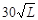
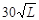
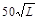
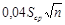
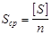
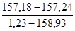
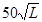

ВЕДОМСТВЕННЫЕ СТРОИТЕЛЬНЫЕ НОРМЫ
ИНЖЕНЕРНО-ГЕОДЕЗИЧЕСКИЕ
ИЗЫСКАНИЯ ДЛЯ МЕЛИОРАТИВНОГО
И ВОДОХОЗЯЙСТВЕННОГО СТРОИТЕЛЬСТВА
ВСН 33-2.1.07-87
МИНИСТЕРСТВО МЕЛИОРАЦИИ И ВОДНОГО ХОЗЯЙСТВА СССР
МОСКВА 1987
РАЗРАБОТАНЫ: Всесоюзным объединением "Союзводпроект" Минводхоза СССР (В.М. Маслов - руководитель темы, Ю.Д. Абабков, В.М. Полевой)
ВНЕСЕНЫ: Всесоюзным объединением "Союзводпроект" Минводхоза СССР
ПОДГОТОВЛЕНЫ Главным техническим управлением Минводхоза СССР
К УТВЕРЖДЕНИЮ: (С.А. Савченко)
С введением в действие ВСН 33-2.1.07-87 "Инженерно-геодезические изыскания для мелиоративного и водохозяйственного строительства" утрачивает силу ВСН 33-2.1.01-83 "Инженерно-геодезические изыскания для мелиоративного строительства".
СОГЛАСОВАНЫ: Госстроем СССР (письмо от 16.10.86 № АЧ-444-8) и ГУГК (письмо от 07.03.86 № 4-104).
|
Министерство мелиорации и водного хозяйства СССР (Минводхоз СССР) |
Ведомственные строительные нормы |
ВСН 33-2.1.07-87 |
|
Инженерно-геодезические изыскания для мелиоративного и водохозяйственного строительства |
Взамен |
Настоящие нормы устанавливают требования к составу и объему инженерно-геодезических изысканий для мелиоративного и водохозяйственного строительства, необходимых для проектирования новых, реконструкции и расширения действующих оросительных и осушительных систем, обводнения земель, сельскохозяйственного водоснабжения, регулирования рек, устройства водохранилищ, строительства гидротехнических и других сооружений.
1.1. Инженерно-геодезические изыскания для мелиоративного и водохозяйственного строительства должны выполняться в соответствии с требованиями СНиП II-9-78, настоящих норм, нормативных документов ГУГК.
1.2. Основанием для производства инженерно-геодезических изысканий является техническое задание, составленное в соответствии со СНиП II-9-78, программа производства работ, сметно-договорная документация и разрешение на производство изысканий.
|
Внесены В/О "Союзводпроект" Минводхоза СССР |
Утверждены приказом Министерства мелиорации и
водного хозяйства СССР |
Дата введения в действие |
В техническом задании должны быть отражены сведения о наличии подземных коммуникаций в районе производства изысканий. Техническое задание выдается не позднее, чем за два месяца до начала изысканий.
1.3. Инженерно-геодезические изыскания должны выполняться только при наличии разрешений, выдаваемых органами Государственного геодезического надзора ГУГК или отделами по делам строительства и архитектуры Исполнительных комитетов местных Советов народных депутатов.
геодезическая разбивка осей изолированных гидротехнических сооружений (плотин, дюкеров, акведуков, мостов и др.);
съемка существующих каналов и коллекторов поперечными профилями с промерами глубин в них;
промерные работы по рекам, озерам и другим водоемам;
съемка в масштабах 1:2000-1:500 площадок под сооружения на каналах на площади не более 2 га, не входящих в комплекс изысканий объекта мелиорации;
вынос в натуру основных осей мелиоративных и водохозяйственных сооружений.
На все работы, перечисленные в п. 1.4., разрешение не оформляется, если не создается дополнительное геодезическое (плановые и высотные сети) или съемочное обоснование.
1.5. Инженерно-геодезические изыскания должны выполняться с использованием новейших типов инструментов, приборов, приспособлений, на современном научно-техническом уровне с применением передовых методов и научной организации труда.
1.6. По всем видам выполняемых работ должен проводиться регулярный контроль и приемка материалов от исполнителей.
При контроле проверяется соблюдение требований и допусков действующих общеобязательных нормативно-технических документов ГУГК, Госстроя СССР, Минводхоза СССР, а также утвержденной программы производства работ.
1.7. При производстве работ должны соблюдаться "Правила по технике безопасности, на топографо-геодезических работах" (ПТБ-73), ГУГК.
1.8. Организации, выполняющие инженерно-геодезические изыскания, должны представлять соответствующим территориальным инспекциям Госгеонадзора отчетные схемы и материалы по завершенным работам в соответствии с "Инструкцией о государственном геодезическом надзоре" (ГУГК при Совете Министров СССР, 1966 г.).
1.9. Материалы полевых работ, подлежащие Государственной приемке, должны быть подготовлены к сдаче в соответствии с инструкцией ГУГК о государственном геодезическом надзоре.
1.10. Работы по созданию Государственной геодезической сети триангуляции, трилатерации и полигонометрии 1, 2, 3 и 4 классов, нивелирной сети I, II, III классов, а также съемки на площади свыше 10 км2 и съемки масштаба 1:10000 любой площади, должны передаваться на выполнение подразделениям ГУГК.
1.11 Геодезические пункты, создаваемые при производстве инженерно-геодезических изысканий, подлежат сдаче на наблюдение за сохранностью землепользователям или органам по делам строительства и архитектуры Исполнительных комитетов местных Советов народных депутатов в порядке регламентированном п. 2.23 инструкции ГКИНП-02-033-82.
Стадия "Проект"
2.1. Для обоснования проекта должны быть выполнены следующие работы: сбор и анализ материалов изысканий прошлых лет; топографические съемки массива и типовых участков в масштабах, приведенных к табл. 1, или обновление имеющихся карт и планов соответствующих масштабов;
топографические съемки площадок под гидротехнические сооружения и подсобные предприятия в масштабах, приведенных в табл. 2;
топографические съемки для проектирования водохранилищ в масштабах, приведенных в табл. 3;
Таблица 1
|
Топографическая съемка, масштаб, сечения рельефа, м |
Примечание |
|||
|
Проект |
РД-РП |
|||
|
объект |
типовой участок |
объект |
||
|
1 |
2 |
3 |
4 |
5 |
|
Орошение |
||||
|
Поверхностный полив |
1:10000 1,0 |
1:2000 0,25 |
1:2000 0,25 |
Нивелирование по квадратам 20 ´ 20 м для РД, РП и типовые участки |
|
Дождевание, открытая и закрытая оросительная сеть |
1:10000 1,0 |
- |
1:10000 1,0 |
Полевое трассирование линейных сооружений для РД, РП |
|
Лиманное орошение |
1:10000 1,0 |
- |
1:10000 1,0 |
Полевое трассирование, линейных сооружений для РД, РП. Инструментальное определение контура лимана |
|
Для лиманов глубиной до 0,5 м |
1:5000 0,5 |
- |
1:5000 0,5 |
|
|
Осушение |
||||
|
Открытая осушительная сеть |
1:10000 1,0 |
- |
1:10000 1,0 |
Полевое трассирование линейных сооружений для РД, РП |
|
Закрытая осушительная система в простых природных условиях* |
l:10000 1,0 |
1:2000 0,5 |
1:2000 0,5 |
|
|
Закрытая осушительная система в сложных природных условиях** |
1:10000 1,0 |
1:2000 0,25 |
1:2000 0,25 |
Нивелирование по квадратам 20 ´ 20 м для РД, РП и типовые участки |
___________
* Простые природные условия - местность равнинная, заболоченная поверхностными водами, легкопроходимая, с отсутствием микрорельефа; залегание слабопроницаемых грунтов от поверхности 1,5 м и более.
** Сложные природные условия - местность с микрорельефом, заболоченная грунтовыми водами, средне- и труднопроходимая; залегание слабопроницаемых грунтов от поверхности до 1,5 м.
Таблица 2
|
Масштаб съемки |
Высота сечения рельефа |
Примечание |
|
|
1 |
2 |
3 |
4 |
|
Площадки под гидротехнические сооружения, переходы через водотоки, автомобильные и железные дороги, напорные трубопроводы на бетонных фундаментах, плотины длиной до 300 м |
1:1000 |
0,5 |
Допускается составление планов в масштабе 1:500 по материалам съемки масштаба 1:1000 |
|
Площадки под переходы через крупные реки, плотины длиной более 300 м; месторождения стройматериалов малых и средних размеров со сложными геологическими условиями: полосы шириной до 300 м вдоль трасс каналов и напорных трубопроводов, проходящих в стесненных условиях и горной местности |
1:2000 |
0,5 |
|
|
Месторождения строительных материалов крупных и средних размеров |
1:5000 |
0,5 |
Таблица 3
|
Масштаб |
Сечение рельефа по дну/на склонах, м |
|
|
До 50 га |
1:2000 |
0,5/1,0 |
|
От 51 до 300 га |
1:5000 |
1,0/2,0 |
|
От 301 до 1000 га |
1:10000 |
2,0/2,0 |
|
Свыше 1000 га |
1:25000 |
2,0/5,0 |
однодневная связка горизонтов воды в реках и каналах;
планово-высотная привязка геологических выработок, геофизических точек и почвенных шурфов, расположенных вне створов; геодезическая разбивка геологических и геофизических створов;
геодезическая разбивка поперечных профилей для исследования торфяных массивов;
топографическая съемка рек и озер;
отбивка зоны затопления в населенных пунктах, на территориях промышленных предприятий и транспортных сооружений при отсутствии планов масштабов 1:5000-1:2000 с сечением рельефа через 1,0 м и меньше (работы выполняются согласно требованиям "Инструкции по определению на местности проектного контура водохранилища" И-43-71, Минэнерго СССР);
камеральное трассирование магистральных, подводящих, нагорных и ловчих каналов, водопроводов, дамб обвалования, коллекторов, спрямлений рек, внутрихозяйственных каналов при наличии карт масштаба 1:10000 с сечением рельефа через 1,0 м;
составление эскизов пересечений проектируемой трассы с наземными и подземными сооружениями;
инструментальная съемка подземных коммуникаций.
2.2. На стадии "Проект" разрешается использовать топографические планы масштаба 1:5000, полученные путем фотомеханического увеличения планов масштаба 1:10000.
На площади объекта менее 1000 га при отсутствии планов масштаба 1:10000 допускается съемка в масштабе 1:5000 с сечением рельефа через 0,5 м. В этом случае трассирование линейных сооружений выполняется по материалам топографической съемки.
топографический план мелиорируемой территории, на котором указывают трассы линейных сооружений и места определения их поперечных сечений, площадки под гидротехнические сооружения, геологические скважины и шурфы;
планы контуров заторфованных участков с отметками поверхности и минерального дна;
продольные профили проектируемых линейных сооружений в масштабах: горизонтальный 1:10000, вертикальный 1:100, а для трасс длиной менее 1 км и при сильно расчлененном рельефе независимо от длины трассы - горизонтальный 1:5000, вертикальный 1:100;
поперечные профили в масштабах: горизонтальный 1:100 при длине поперечника до 50 м, при большей длине - 1:200, вертикальный - 1:100;
продольные профили существующих каналов и рек в масштабах: горизонтальный 1:25000-1:5000, вертикальный 1:500-1:100;
поперечные профили в масштабах: горизонтальный 1:1000-1:100, вертикальный 1:100;
продольные профили основного и смежных створов плотины в масштабах: горизонтальный 1:100-1:200, вертикальный 1:100;
планы съемки подземных коммуникаций;
планы крупномасштабных съемок сооружений и типовых участков;
планы съемок рек, озер и водохранилищ;
схемы геодезических сетей сгущения и съемочного оборудования, абрисы закрепленных геодезических пунктов, каталоги координат и высот пунктов геодезической сети, эскизы пересекаемых сооружений и сооружений на каналах;
технический отчет.
данными о топографо-геодезических работах прошлых лет;
описанием проектируемых трасс и обследованных линий электропередач, трубопроводов, дорог, участков переходов трасс через естественные препятствия, пересечений и сближений трасс с существующими коммуникациями и другими сооружениями;
данными о стоимости выполненных работ;
рекомендациями по проведению последующих топографо-геодезических работ.
К техническому отчету должны быть приложены схемы геодезических сетей; абрисы закрепленных геодезических пунктов; каталоги координат и высот пунктов геодезических сетей, геологических выработок, гидрологических постов и других точек; копии топографических планов, планов и профилей трасс линейных сооружений и другие материалы, полученные в процессе работ и необходимые для разработки проекта.
Стадия "Рабочая документация"
2.5. На стадии "Рабочая документация" должны выполняться работы, перечисленные в пп. 2.1-2.4 настоящих норм, если указанные работы не выполнялись на стадии "Проект" или выполнялись не в полном объеме. Дополнительно выполняют:
трассирование распределительной и внутрихозяйственной сети каналов;
топографическую съемку для проектов строительной планировки;
топографическую съемку площадок станций катодной защиты трубопроводов;
обновление топографических планов (по необходимости).
2.6. Топографическая съемка в масштабе 1:2000 должна выполняться нивелированием по квадратам со сторонами 20 ´ 20 м по подготовленной и предварительно спланированной поверхности. В случае невозможности предварительной расчистки территории от камней, кустарника, пней и ликвидации следов раскорчевки допускается выполнением мензульной съемки с сечением рельефа через 0,5 м с последующим определением отметок вершин квадратов 20 ´ 20 м по горизонталям плана. Площадь таких съемок не должна превышать контура неблагоустроенной территории.
2.7. Внутрихозяйственную сеть каналов следует трассировать от закрепленных пунктов, установленных при трассировании распределительной сети, а также от твердых контуров местности.
При наличии плана масштаба 1:50000 или 1:20000 с сечением рельефа через 0,5-0,25 м полевое трассирование внутрихозяйственной сети не выполняют; продольные и поперечные профили составляют по плану.
2.8. Результатом полевых работ, выполненных на стадии "Рабочая документация", должны быть материалы, перечисленные в п. 2.3 настоящих норм, а также планы в масштабе 1:2000 или их цифровая модель по вершинам квадратов 20 ´ 20 м участков строительной планировки.
Для "Рабочей документации" поперечные профили, как правило, необходимо строить в неискаженных масштабах. В отдельных случаях допускается построение поперечных профилей с искажением соотношения масштабов не более, чем в 2 раза.
Технический отчет должен составляться в соответствии с требованиями п. 2.5. настоящих норм.
Стадия "Рабочий проект"
2.9. Топографо-геодезические изыскания для обоснования рабочего проекта должны выполняться в составе и объеме, предусмотренном для стадии "Рабочая документация".
Плановое геодезическое обоснование
3.2. Методика и точность построения геодезических сетей сгущения и съемочного геодезического обоснования должна определяться согласно инструкций СН 212-73, ГКИНП-02-033-82 с учетом требований пп. 3.3-3.8 настоящих норм.
3.3. При построении съемочных сетей методом триангуляции взамен теодолитных ходов, горизонтальные углы измеряют теодолитами точностью не ниже 30² одним приемом с перестановкой лимба между полуприемами на 90°. Средняя квадратическая погрешность измеренного угла, подсчитанная по невязкам в треугольниках, не должна превышать 30², предельные невязки треугольников должны быть не более 1¢, 5.
При использовании для измерений электронных дальномеров длина линий определяется расстояниями между смежными углами.
Створные знаки устанавливаются в пределах видимости, но не реже чем через 500 м.
Площадь таких съемок не должна превышать:
для масштаба 1:5000 - 20 км2;
для масштаба 1:2000 и крупнее - 10 км2.
Самостоятельные съемочные сети ориентируют по истинному азимуту со средней квадратической погрешностью не более 1. На участках площадью до 5 км2 разрешается ориентировать съемочные сети по магнитному азимуту.
Высотное геодезическое обоснование
3.6. Высотное геодезическое обоснование на объекте мелиорации должно создаваться нивелированием III-IV классов и техническим нивелированием. Класс нивелирования устанавливается в зависимости от уклонов водотоков (рек, каналов) и длины магистральных ходов.
При уклонах менее 0,00005 необходимо прокладывать нивелирные ходы III класса, при уклонах от 0,00005 до 0,0005 - IV класса, при уклонах более 0,0005 - ходы технического нивелирования.
Нивелирование III и IV классов следует выполнять в соответствии с требованиями инструкции ГУГК по нивелированию I, II, III и IV классов.
Магистральные ходы технического нивелирования прокладывают между реперами нивелирования IV класса и выше. Значения предельной длины ходов и допусков приведены в табл. 4.
Таблица 4
|
Предельная длина хода, км |
Допустимая невязка |
|||
|
между двумя исходными пунктами |
между исходными пунктом и узловой точкой |
между двумя узловыми точками |
||
|
1 |
2 |
3 |
4 |
5 |
|
Техническое (основные ходы) для съемок с высотой сечения через 0,25 м |
6 |
4 |
3 |
 |
|
Техническое (основные ходы) для съемок с высотой сечения через 0,5 м |
10 |
8 |
5 |
 |
|
То же, через 1 м и более |
16 |
12 |
8 |
То же |
|
Техническое (съемочные ходы) для съемок с высотой сечения через 0,25 м |
2 |
1,5 |
1 |
 |
|
То же, через 0,5 м |
6 |
4 |
3 |
То же |
|
То же, через 1 м и более |
10 |
8 |
5 |
То же |
|
Тригонометрическое для съемок с высотой сечения более 1 м |
1 |
- |
- |
 где n - число линий в ходе (полигоне); S - длина линии, м  |
3.7. Высоты точек съемочных геодезических сетей необходимо определять из геометрического или тригонометрического нивелирования.
При проложении основных ходов используют нивелиры и рейки, предусмотренные для нивелирования не ниже IV класса. Расстояние от нивелира до реек должно быть не более 150 м.
3.8. Количество долговременно закрепленных пунктов геодезической основы (грунтовые, скальные, стенные и строительные реперы, центры триангуляции и полигонометрии всех классов и разрядов, металлические трубки на бетоне) должно быть не менее указанного в табл. 5.
Таблица 5
|
Среднее количество закрепляемых пунктов на 1 км2 съемки |
Примечание |
||
|
планового обоснования |
высотного обоснования |
||
|
1:5000 |
1 |
1 |
Допускается совмещение пунктов планового и высотного съемочного обоснования |
|
1:2000 |
1 |
2 |
|
|
1:1000 |
5 |
3 |
|
На каждом объекте мелиорации, а также на площадках под гидротехнические сооружения, независимо от их размеров и масштабов съемки, должно быть установлено не менее двух постоянных знаков, включая исходные, расположенные на объекте, и не далее 2 км от него.
При съемке в масштабе 1:2000 для проектирования закрытого дренажа устанавливают один временный репер на каждые 25 га съемки с учетом наличия ранее установленных долговременных закрепительных знаков.
4.1. При всех видах съемок точность и содержание топографических планов должно соответствовать требованиям ГКИНП-02-033-82.
4.2. К топографическим съемкам и планам, предназначенным для проектирования объектов мелиорации и водного хозяйства предъявляются следующие дополнительные требования:
средние погрешности съемки рельефа в масштабе 1:2000 относительно ближайших точек съемочного обоснования не должны превышать по высоте:
1/4 принятой высоты сечения при углах наклона до 1° для планов с высотой сечения рельефа горизонталями через 0,5 м;
1/3 принятой высоты сечения рельефа горизонталями при углах наклонов от 1 до 6°;
для планов с высотой сечения рельефа горизонталями через 0,25 м, создаваемых для строительной планировки, средние ошибки съемки рельефа не должны превышать 1/3 высоты сечения;
наименьшая площадь снимаемого контура сельскохозяйственных угодий не должна превышать 10 мм2 в масштабе плана и 20 мм - прочих контуров;
при съемке тальвегов расстояние между пикетами не должно превышать 1,5 см в масштабе плана;
при съемке торфяных болот на плане подписывают отметки высот дневной поверхности и минерального дна;
населенные пункты вне пределов влияния проектируемых сооружений не снимают, а показывают только границу населенного пункта, выходы улиц и скотопрогонов, а также строения, расположенные вне населенного пункта;
у труб под дорогами подписывают с точностью до 0,01 м в числителе отметки входа и выхода по низу трубы, в знаменателе - диаметр трубы и отметку полотна дороги; рядом материал трубы, например:

выходы на поверхность коренных пород, существующие границы землепользователей наносят на план независимо от их площади и протяженности;
на валах раскорчевки подписывают их высоту с точностью до 0,1 м в характерных местах;
на каждый квадратный дециметр вычерчиваемого плана на плоскоравнинных участках подписывают отметки 15-30 точек, и на равнинно-пересеченных участках - 10-15 точек;
в контурах изрытых мест, карьеров, песчаных насыпей и выемок, отмелей и т.п. на плане подписывают отметки через 2-2,5 см;
отметки долговременно закрепленных знаков, водомерных постов и урезов воды подписывают с точностью до 0,01 м;
на одном листе карты допускается применять две высоты сечения рельефа; через 1 или 0,5 м на плоскоравнинных участках, 2 и 5 м - на крутых склонах;
участки с разной высотой сечения рельефа показывают на схеме за южной рамкой оригинала карты.
4.3. При съемке на прозрачной основе объектов большой протяженности разрешается съемка в квадратной разграфке на одной основе без деления на планшеты. При этом, если их вычерчивание производится непосредственно в полевых условиях выкопировки сводок по рамкам топопланов, кальки контуров и высот не составляют.
4.4. При выполнении съемки масштаба 1:2000 с высотой сечения рельефа через 0,25 м расстояния между пикетами на местности не должны превышать 20 м. Определение отметок пикетов производится нивелиром. Максимальное расстояние от нивелира до рейки не должно превышать 150 м. Отсчеты по рейке берутся с точностью до сантиметра; съемка выполняется обычными методами, без разбивки сети квадратов.
4.5. При съемке площадок под сооружения на каналах, а также участков под вертикальную планировку, оригиналы планов могут быть оформлены карандашом. Ситуацию на таких планах разрешается характеризовать пояснительными надписями вместо условных знаков.
5.1. Плановое обоснование для съемки каналов, рек, озер (водохранилищ) следует создавать в соответствии с пп. 3.1-3.5 настоящих норм.
5.2. Каналы, реки, озера (водохранилища) следует снимать поперечными профилями с магистральных планово-высотных ходов, прокладываемых вдоль берегов с разбивкой пикетов через 50-100 м. Длина поперечных профилей в обе стороны от бровок и расстояние между пикетами устанавливаются техническим заданием.
5.3. При ширине рек и озер (водохранилищ) свыше 800 м теодолитные ходы следует прокладывать по обоим берегам. Теодолитные ходы прокладывают согласно п. 3.4 настоящих норм.
5.5. Высотное обоснование строят в соответствии с требованиями пп. 3.6-3.8 настоящих норм.
Нивелирные ходы IV класса должны закрепляться грунтовыми реперами согласно Инструкции по нивелированию I, II, III и IV классов (ГУГК при Совете Министров СССР, 1974 г.).
Основные ходы технического нивелирования должны закрепляться строительными реперами в среднем через 3 км.
При продолжении магистральных ходов необходимо нивелировать все сооружения на каналах: шлюзы, мосты, дюкеры, акведуки, водовыпуски и трубы.
При съемке озер (водохранилищ) расстояния между промерными профилями не должны превышать 2 см масштаба составляемого плана, промеры глубин по вертикалям должны обеспечивать выбранную высоту сечения рельефа (см. табл. 3).
5.7. Промеры глубин должны производиться по вертикалям от уреза воды с точностью 0,1 м рейкой или эхолотом с промерного судна. Зимой глубины измеряют со льда. Одновременно с промерами определяют мощность ила.
Концы промерных профилей необходимо закреплять деревянными копьями со сторожком. Каждый пятый поперечный профиль при длине свыше 50 м закрепляют деревянными столбами.
5.8. Расстояние между вертикалями по промерному створу на канале, реке следует принимать:
при ширине до 20 м - не более 2 м;
при ширине 20-50 м - не более 5 м;
свыше 50 м - 7-10 м.
Во всех случаях количество вертикалей не должно быть менее 6, при этом расстояние между вертикалями необходимо сгущать по мере приближения к берегу.
При отсутствии контурности, а также при расстоянии между поперечными профилями до 200 м для их привязки разбивают по бровке канала (реки) пикетаж между контурами или геодезическими пунктами.
5.10. В случае необходимости съемки прибрежной полосы озер или водохранилищ, ее необходимо выполнять в том же масштабе, что и чаши озера (водохранилища) с точек теодолитного хода, проложенного для определения промерных створов или с точек съемочного обоснования, согласно разделу 3 настоящих норм.
5.11. Для определения уклонов реки или канала на снимаемом участке следует выполнять однодневную связку уровней горизонта воды. Расстояния между точками однодневной связки устанавливаются техническим заданием в зависимости от характера реки или канала.
6.1. При нивелировании площадей по квадратам для проектов строительной планировки должны быть выполнены следующие работы:
разбивка базиса и сетки основных квадратов со сторонами 400 ´ 400 м или 200 ´ 200 м, в зависимости от конфигурации и площади участка;
проложение теодолитных и нивелирных ходов по сторонам основных квадратов;
закрепление базисов и сетки основных квадратов;
привязка основной сетки квадратов к исходным пунктам государственной геодезической сети или геодезической сети сгущения;
разбивка сетки заполняющих квадратов со сторонами 20 ´ 20 м и нивелирование их вершин.
6.2. В зависимости от конфигурации участка базис разбивают параллельно или перпендикулярно направлению полива. Погрешность измерения базиса не должна превышать 1:2000 его длины.
С базиса разбивают основные квадраты. Отклонения вершин основных квадратов от прямой линии не должны превышать 0,4 м.
6.3. Начальную и конечную точки базиса необходимо закреплять строительными реперами. Для обеспечения долговременной сохранности реперы могут быть смещены по направлению базиса за границу участка.
На участке планировки устанавливают реперы из расчета 1 репер на 2 км2.
6.4. На больших площадях, подлежащих строительной планировке через 800-1200 м, в зависимости от прямой видимости, параллельно первому базису разбивается второй, третий и т.д. Максимальное расстояние между базисами не должно превышать 1200 м.
6.5. Между одноименными пикетами базисов следует разбивать основные квадраты. Вершины основных квадратов закрепляют деревянными столбами, трубками или уголковым железом. На знаках подписывают номера пикета и створа.
6.6. После разбивки и закрепления основных квадратов внутри каждого основного квадрата тросом или мерной лентой разбивают и закрепляют кольями квадраты со сторонами 20 м.
Отклонение вершин этих квадратов от оси створа не должно быть более 0,6 м; 100-метровые пикеты закрепляют кольями со сторожками.
6.7. По согласованию с заказчиком вершины квадратов 20 ´ 20 м могут кольями не закрепляться.
6.8. По контуру участка планировки и вершинам основных квадратов следует прокладывать теодолитные ходы. Длина теодолитных ходов между исходными пунктами не должна превышать 4 км, в системах теодолитных ходов - 3 км между исходными пунктом и узловой точкой или между узловыми точками. Относительная погрешность ходов не должна превышать 1:2000.
6.9. Высотное обоснование по контуру участка и вершинам основных квадратов необходимо создавать в соответствии с пп. 3.6-3.9 настоящих норм.
6.10. Отметки высот вершин заполняющих квадратов и характерных точек внутри квадратов должны определяться с помощью нивелира с точностью до 1 см. Отметки вершин записывают в специальных карточках с сеткой квадратов размером 1,5 ´ 1,5 см или полевых журналах.
Для контроля нивелирования на каждой станции нивелируют 2-3 связующие точки, отметки которых получены с предыдущих станций. Расхождение не должно превышать 2 см.
6.11. В отдельных случаях на местности со сложным рельефом (бугры, впадины, промоины) и на местности, заросшей камышом и кустарником, по согласованию с заказчиком разрешается выполнять мензульную или стереофотограмметрическую съемку в масштабе 1:2000 с высотой сечения рельефа горизонталями через 0,5 м. Съемку следует производить набором пикетов не реже, чем через 20 м.
Основные положения
7.1. Трассировочные работы для строительства автомобильных дорог, трубопроводов, линий электропередач и связи на объектах мелиорации следует выполнять согласно СНиП II-9-78 и СН 234-62.
7.2. Трассы линейных сооружений следует располагать на менее ценных для народного хозяйства землях.
7.3. При трассировании каналов необходимо:
за начало отсчета пикетов (ПКО) принимать на оросительных каналах место водозабора, на осушительных - водоприемник;
нивелирные ходы по трассе канала закреплять реперами согласно пп. 5.4-5.5 настоящих норм;
грунтовые реперы устанавливать вдоль оси трассы с учетом обеспечения их сохранности при производстве строительных работ.
При трассировании внутрихозяйственных каналов постоянные реперы не закладывают.
7.4. Магистральные ходы технического нивелирования, прокладываемые по оси трассы, должны соответствовать требованиям пп. 3.6-3.8 настоящих норм.
При трассировании внутрихозяйственных
каналов допустимая погрешность в ходе не должна превышать + 
7.5. Теодолитный ход, прокладываемый по оси трассы, должен удовлетворять требованиям п. 3.4 настоящих норм. При проложении хода привязывают все реперы, заложенные по трассе.
7.6. Углы поворота и створные знаки трассы необходимо закреплять деревянными столбами, трубками или уголковым железом на бетоне.
7.7. При пересечении трассовой линий электропередач, связи, подземных и надземных сооружений следует измерять:
угол между трассой и осью пересекаемого сооружения с точностью до 1°;
расстояние до ближайших опор в обе стороны от оси трассы;
число проводов и высоту нижних проводов над землей.
7.8. При пересечении железных дорог, автомагистралей и водотоков масштаб топографической съемки и высоту сечения рельефа следует назначить согласно табл. 2.
На планы перехода через железную дорогу необходимо наносить отметку головки рельса, подошвы насыпи железнодорожного полотна, километр и пикет дороги.
7.9. При пересечении подземных коммуникаций следует определять их плановое и высотное положение по 200 м в каждую сторону от оси трассы.
7.10. Для определения поперечных уклонов трассы перпендикулярно ее оси на пикетах и в характерных местах снимают поперечные профили. Длина поперечных профилей и расстояние между ними устанавливаются техническим заданием.
7.11. На косогорных и стесненных участках трассы, где разбивка поперечных профилей экономически нецелесообразна и поперечные профили не могут отобразить все необходимые элементы рельефа и ситуации, следует выполнять топографическую съемку полосы местности в масштабе согласно табл. 2.
7.12. По результатам проведенных трассировочных работ на стадии "Рабочая документация" дополнительно к требованиям пп. 2.5-2.8 настоящих норм составляют:
план трассы с указанием углов поворота трассы и элементов кривых (масштаб плана определяется техническим заданием);
ведомость прямых и кривых по трассе;
ведомость и схему расположения геодезических знаков, установленных по трассе.
Трассирование по заданному направлению
7.13. При трассировании по заданному направлению должны выполняться следующие виды работ:
составление технического проекта трассировочных работ;
определение положения трассы на местности;
закрепление углов поворота и створных знаков;
проложение по оси трассы теодолитных ходов с разбивкой пикетажа и составлением абриса прилегающей территории в пределах установленной длины поперечного профиля;
проложение магистральных нивелирных ходов;
разбивка и нивелирование поперечных профилей;
съемка пересечений, площадок под инженерные сооружения, стесненных участков и участков со сложным рельефом;
камеральная обработка материалов трассирования, крупномасштабных съемок и составление разбивочных чертежей на стадии "Рабочая документация".
Трассирование по заданному уклону
7.14. Трассирование по заданному уклону необходимо выполнять по методу последовательного отыскания на местности техническим нивелированием точек с проектными отметками от высотного геодезического обоснования, построенного в соответствии с пп. 3.6-3.8 настоящих норм.
Отметку начальной точки определяют техническим нивелированием и сравнивают ее с проектной. Последующие отметки точек на местности не должны отличаться от проектных более, чем на 10 см.
После перенесения на местность проектных точек трасса спрямляется. Спрямление трассы необходимо выполнять с учетом технических требований по трассированию (допускаемых насыпей и выемок, условий пересечения естественных и искусственных препятствий, сооружений и т.п.). По оси спрямленной трассы прокладывают теодолитный и нивелирный ходы с разбивкой пикетажа.
7.15. Трассирование по заданному уклону в закрытой местности должно производиться в два этапа:
I этап - предварительное трассирование проектной оси трассы по заданному направлению с разбивкой и нивелированием поперечных профилей;
II этап - уточнение на местности проектной оси по поперечным профилям предварительной трассы.
7.16. Трассирование должно выполняться в соответствии с проектом и требованиями пп. 7.1-7.12 настоящих норм. По оси трассы в зависимости от рельефа местности разбивают пикеты через 100 или 50 м.
Пикеты и характерные точки местности закрепляют кольями. На каждом пикете, углах поворота и в характерных местах разбивают и нивелируют поперечные профили. Длина поперечных профилей зависит от рельефа, общего поперечного уклона местности; длину профиля назначают с таким расчетом, чтобы проектная отметка соответствующего пикета находилась на поперечном профиле.
При однообразном рельефе поперечные профили нивелируют только на углах поворота и в характерных местах, но не реже, чем через 400 м.
По выполненным работам составляют план трассы в масштабе не мельче 1:10000; уточняют положение трассы канала с учетом допустимых величин выемок и насыпей, условий пересечения естественных и искусственных препятствий и сооружений.
7.17. На II-м этапе трассирования необходимо составить проект перенесения на местность оси трассы, уточненной по плану и поперечным профилям предварительной трассы.
Трассу переносят на местность от точек теодолитного хода, проложенного по оси предварительной трассы.
По вынесенной на местность трассе прокладывают теодолитный и нивелирный ходы с разбивкой пикетажа. При необходимости разбивают и нивелируют дополнительные поперечные профили.
Трассирование водопроводов
7.18. Трассирование водопроводов следует выполнять в соответствии с требованиями СН 234-62. При трассировании групповых водопроводов сельскохозяйственного назначения необходимо соблюдать следующие дополнительные требования:
трасса водопровода должна пересекать железные и автомобильные дороги в местах насыпи или нулевых отметок;
при присоединении линии к существующему водопроводу в местах подключения (водопроводный колодец) нивелируют верх трубы, крышку, дно колодца, а также составляют эскиз узла подключения.
7.19. Площадки под строительство водопроводных сооружений (водозаборов, очистных сооружений, насосных станций, водонапорных башен) и пересечений искусственных и естественных препятствий снимают в масштабах, согласно табл. 2.
7.20. При пересечении трассой рек следует снимать береговую полосу в масштабе, согласно табл. 2. Ширина полосы съемки - по 50 м в обе стороны от оси трассы. Длина полосы съемки зависит от характера берегов рек и определяется техническим заданием. Дно реки снимают путем промеров глубин (пп. 5.6-5.9 настоящих норм) по трем поперечным профилям - основному (по оси трассы) и двум дополнительным, расположенным выше и ниже основного по течению реки на расстоянии 50 м.
На плане съемки перехода и продольном профиле водопровода наносят отметки горизонтов воды: меженного, паводкового и максимального.
7.21. При пересечении трассой существующих и проектируемых подземных или наземных сооружений последние должны наноситься на план и профиль с указанием вида сооружения, размеров и отметок основных его элементов. На каждое пересечение составляют эскиз.
Трассирование створа плотины
7.22. При трассировании основного створа плотины, независимо от ее назначения, размеров и масштаба выполненной съемки, необходимо разбивать пикетаж по оси плотины через 100 м от левого берега к правому. При этом пикеты и характерные точки закрепляют кольями.
7.23. Створ плотины следует закреплять двумя, а на реках шириной более 100 м - четырьмя строительными реперами, по два с каждого конца створа, закладываемыми вне зоны строительства на продолжении створа. Реперы должны быть закоординированы. Расстояние между реперами определяют аналитическим методом.
Относительная погрешность определения планового положения реперов не должна превышать 1:2000.
7.24. Отметки точек по створу определяют техническим нивелированием.
7.25. На реках при трассировании плотин следует выполнять промеры глубин реки по основному створу (по оси сооружения) и двум створам, расположенным выше и ниже створа плотины на расстоянии, указанном в техническом задании.
8.1. Перенесение в натуру и привязку инженерно-геологических и почвенных выработок необходимо производить с учетом следующих требований:
погрешности определения планового положения точек инженерно-геологической съемки и геофизической разведки относительно пунктов съемочных сетей не должны превышать 1 мм в масштабе карты, служащей топографической основой инженерно-геологической съемки;
погрешности определения планового положения геологических выработок по трассе каналов и других гидротехнических сооружений не должны превышать 2 м относительно оси сооружения;
погрешности определения высот точек инженерно-геологической съемки и геофизической разведки относительно пунктов съемочного обоснования не должны превышать 1 м.
8.2. Для выполнения геологических работ на местности прокладывают створы с разбивкой пикетажа, высоты которого определяют техническим нивелированием с допустимой невязкой в ходе не более + мм; высоты гидрогеологических, режимных скважин и скважин на опытных участках определяют от временных реперов, установленных на опытном участке и у режимных скважин, с ошибкой, не превышающей ± 10 мм.
8.3. Геологические выработки, расположенные на трассах каналов, коллекторов, водопроводов и геологических створах, привязывают линейными промерами к ближайшим пикетам трассы, а их высоты определяют по профилю.
При наличии планов масштаба 1:5000 и крупнее с сечением рельефа через 0,5 м плановое положение геологических выработок определяют промерами или линейными засечками от опознанных контуров местности, отметки - по горизонталям плана.
8.4. При разведке строительных материалов для мелиоративных систем необходимо выполнять топографическую съемку месторождений в масштабах, приведенных в табл. 2.
8.6. Погрешность определения планового и высотного положения точек почвенных выработок, указанных в п. 8.5 настоящих норм, не должна превышать 2 мм в масштабе составляемой почвенной карты и 1/3 высоты сечения рельефа используемого топографического плана.
8.7. При зондировании торфяной залежи на участке работ необходимо разбивать поперечные профили через 100-300 м.
Поперечные профили разбивают кипрегелем или теодолитом, расстояние определяют лентой (тросом) или дальномером. Концы профиля закрепляют деревянными столбами. Высоты точек по профилю определяют из технического нивелирования с допустимой невязкой в ходе не более ± мм.
При зондировании торфяной залежи на болотах с большой контурностью, если есть топографические планы с сечением рельефа горизонталями через 1,0 м и менее, высоты точек зондировочных профилей определяют по горизонталям плана. При наличии фотокарт, фотопланов, топографических планов, аэрофотоснимков масштаба 1:5000 ¸ 10000 поперечные профили не разбивают, планово-высотную привязку точек зондирования выполняют по указанным материалам.
СОДЕРЖАНИЕ